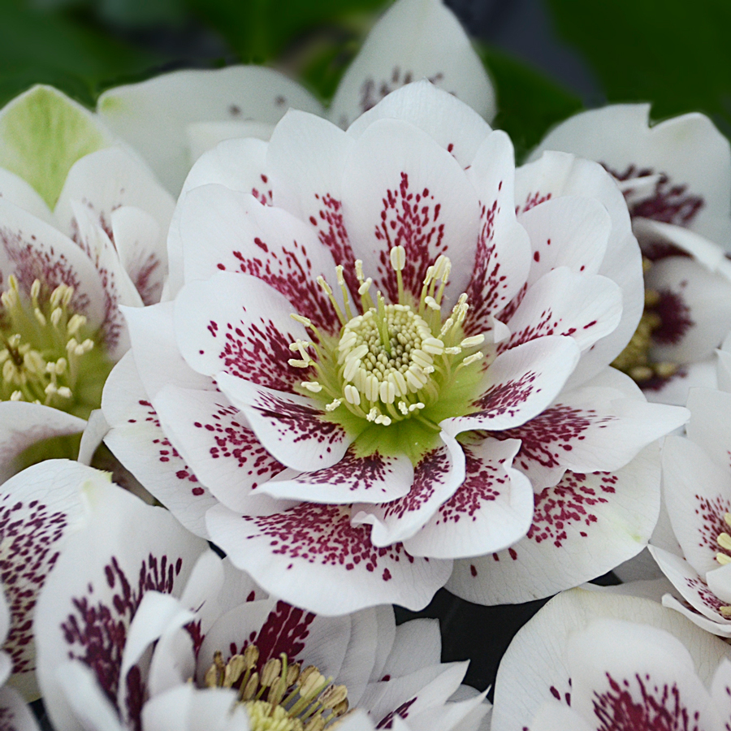

Some of The Plants

- Helleborus
- - The leaves, stems and roots of this plant are all poisonous
- - If ingested it can make you very ill

- Galanthus Nivalis
- - It can grow up to 10cm in height
- - Its more common name is Snowdrop
- - It has a low severity poison

- Primula obconica
- - It is more commonly know as Poison Primrose
- - The leaves are covered in tiny hairs that secrete a toxic substance
- - This will cause immediate irritation and forms blisters
| Flower |
Poisonous |
Rarity |
| helleborus |
Somewhat poisonous |
common |
|
| Snowdrop |
low severity posion |
not very common |
| Primula obconica |
Low severity posion |
not very common |